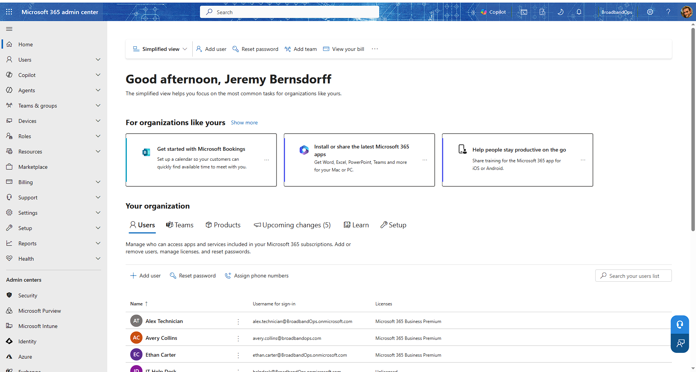
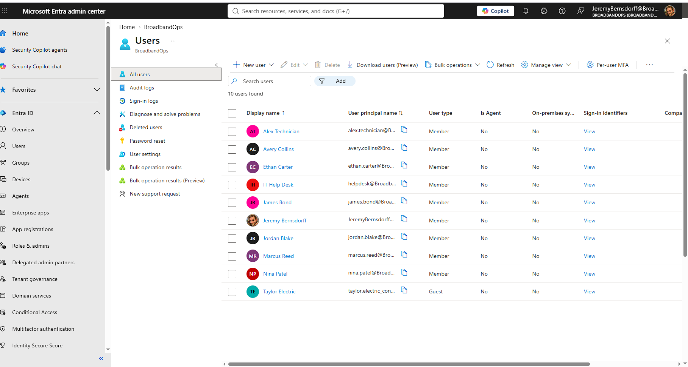
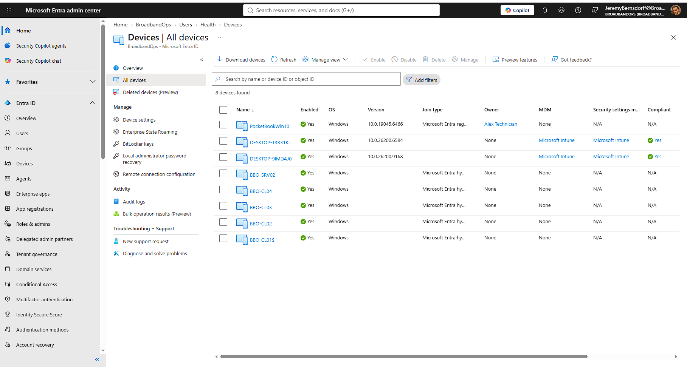
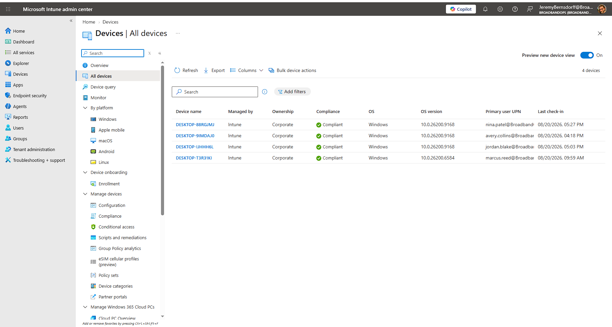
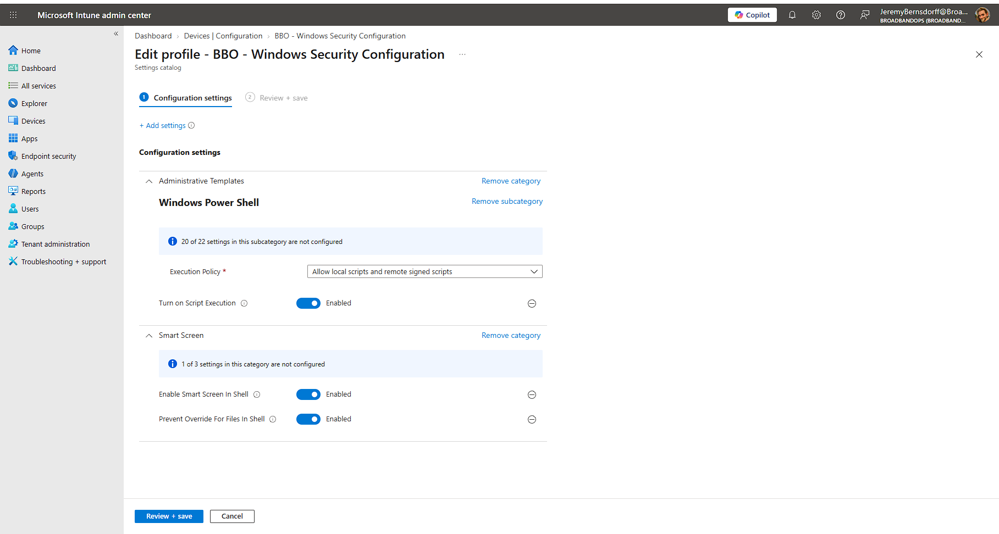
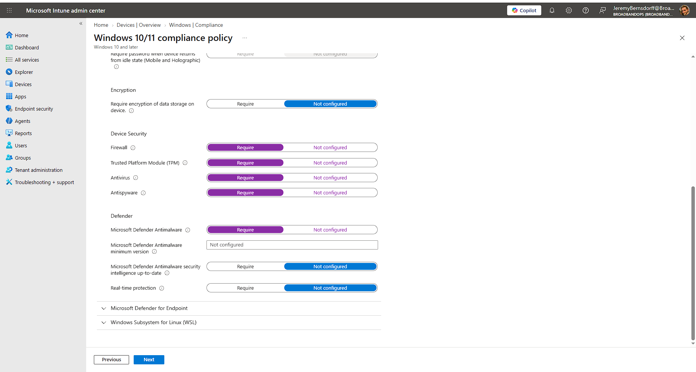

Microsoft 365 Admin CenterTenant administration and Microsoft 365 service management.
MICROSOFT 365 ADMINISTRATION LAB
Hands-on administration across Microsoft 365 Business Premium, Entra ID, Entra Connect Sync, Intune, configuration policies, compliance policies, endpoint enrollment, and hybrid identity.
MICROSOFT 365 ADMINISTRATION
Practical administration across Microsoft 365, Entra ID, hybrid identity, Intune endpoint management, configuration profiles, and compliance policy.





